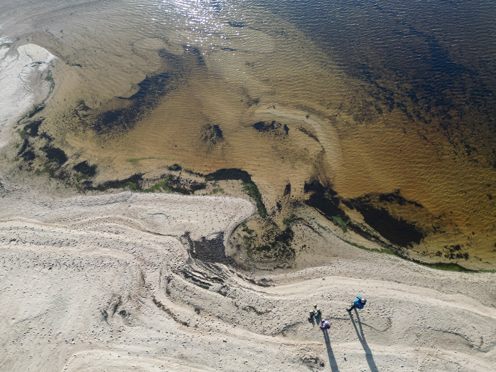

Yellowcraigs Beach
Finally, a return to old habits as we took a road trip to Yellowcraigs, with a picnic and camera kit, blanket and a book to waste a…
20th Jul 2023
There is new machinery behind the Niximagery website, based on the Quarto web publishing system I am using for other technical sites. I’m really liking that it just works.
We took a little trip around the bypass yesterday to spend some time on a beach. What is it about the sound of the shoreline that touches us so deeply? Is it our marine ancestors, or something closer to home in our cultural resonances? This picture is from drone footage at Loch Shiel earlier this year and captures new perspective, yet old knowing as if from a dream or astral journey. Why are such visions so familiar to us?
Read more about the latest beach trip here. There’s more on Loch Shiel here. And holiday pictures from Corfu here.
